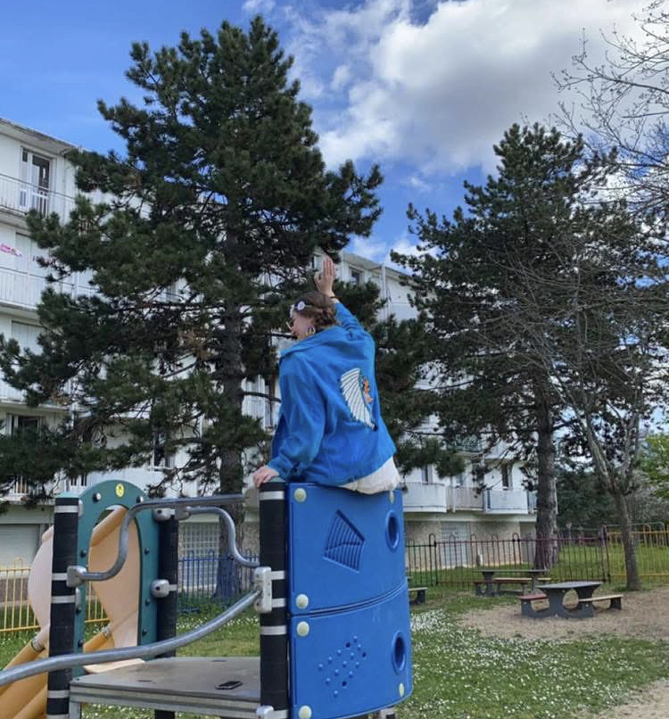
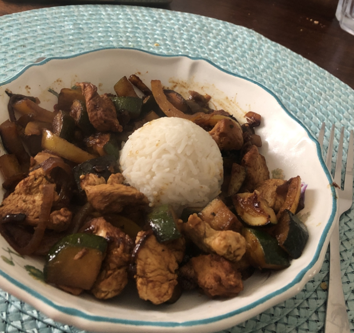

HÉLÉNA GUERTIN
Je m'appelle Héléna Guertin, j'ai 20 ans et je suis actuellement étudiante en BUT Science des Données. Curieuse et motivée, je m'intéresse particulièrement à l’analyse et à l’exploitation des données. Sur ce site vous pourrez découvrir les projets qui m'ont le plus marqué et appris lors de mes années d'étude.
Explorez mes réalisations à travers les onglets de navigation pour découvrir mon évolution durant mon cursus.

Pour mieux me connaitre :
En dehors de mes études, j'aime le sport, la cuisine, les animaux, les voyages simples et la photographie, qui me permet de capturer des instants du quotidien ou de mes découvertes. Dès que j’en ai l’occasion, je m’engage également dans des actions de bénévolat, cela me permet de faire des rencontres tout en me rendant utile. Ces expériences enrichissent mon parcours personnel et professionnel, tout en renforçant mes valeurs d’entraide et d’ouverture aux autres.


